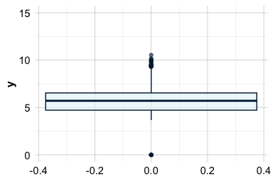
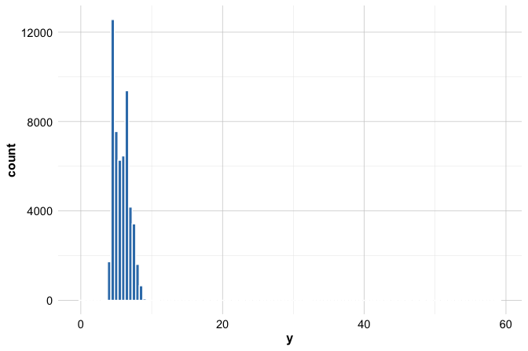
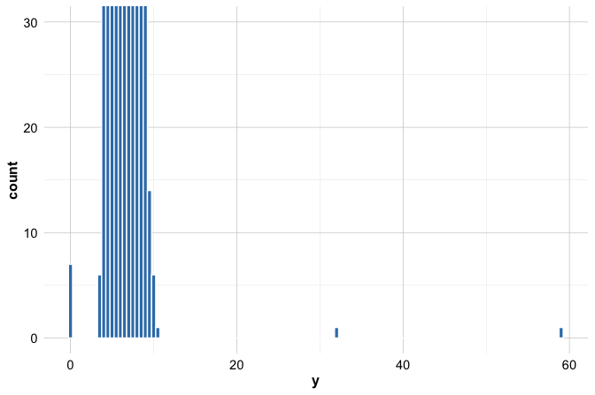
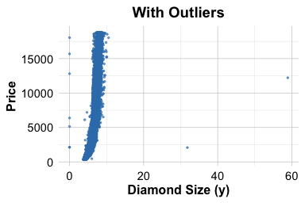
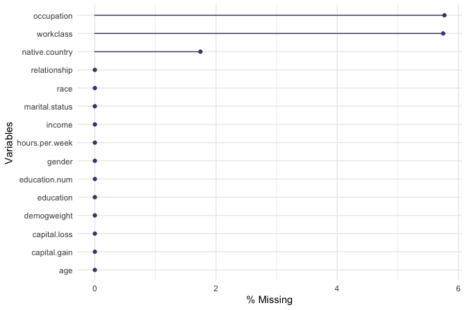

3 Data Preparation in Practice: Turning Raw Data into Insight
You have just been handed a spreadsheet with hundreds of columns and thousands of rows—missing entries, inconsistent labels, strange codes like -999, and values that make no sense. How do you begin to turn this chaos into insight?
In this chapter, we explore one of the most underestimated yet indispensable stages in the Data Science Workflow: data preparation. No matter how sophisticated your algorithm, the quality of your data will ultimately shape the trustworthiness of your results. It is often said that data scientists spend up to 80% of their time preparing data, and with good reason.
In real-world settings, data rarely arrives in a clean, analysis-ready format. Instead, it often includes missing values, outliers, inconsistent entries, and a mix of numerical and categorical variables. Preparing such data means more than just “cleaning”; it involves thoughtful transformation, encoding, and restructuring to support both exploration and modeling.
By contrast, datasets found on platforms like Kaggle are typically curated and neatly labeled, often with a clear target variable and well-posed questions. These are excellent for learning, but they can give a misleading impression of what real data science work entails. In practice, data is collected for operational, not analytical, purposes, and significant effort is required to make it useful for decision-making.
To bring data preparation techniques to life, we begin with the diamonds dataset from the ggplot2 package, a structured and relatively clean dataset that allows us to practice foundational skills. Later in the chapter, we shift to the adult income dataset, where we apply the same techniques to a more realistic, messier context.
Although this chapter focuses on data preparation, many of the steps, such as detecting outliers, handling missing values, and transforming variables, overlap with exploratory data analysis (Chapter 4) and data setup for modeling (Chapter 6). These stages are often revisited in practice, reflecting the iterative nature of the Data Science Workflow.
With a clear understanding of the problem and its connection to the available data, we now move to the next step: preparing the dataset for analysis. This step builds the foundation for meaningful insights and reliable machine learning models, transforming raw information into structured knowledge.
What This Chapter Covers
This chapter introduces the essential techniques for transforming raw data into a format suitable for analysis and modeling. You will learn how to:
Spot and manage outliers using visualization and filtering to reduce distortion,
Detect and impute missing values to preserve data quality and completeness,
Scale numerical features using Min-Max and Z-score methods to ensure comparability,
Encode categorical variables through ordinal, one-hot, and frequency encoding for use in machine learning algorithms.
To ground these techniques, we begin by clarifying the analytical goals of our first dataset, the diamonds dataset, and frame the task of price estimation as a data science problem. The chapter concludes with a hands-on case study using the adult income dataset, where you will apply the full data preparation pipeline in a more complex, real-world setting. Together, these skills form a crucial step in the Data Science Workflow and prepare you to build models with clean, structured, and meaningful data.
3.1 Data Preparation in Action: The diamonds Dataset
How can we quantify the value of a diamond? What determines why two stones that appear nearly identical fetch vastly different prices? In this section, we bring the concepts of data preparation to life using the diamonds dataset, a rich, structured collection of gem attributes from the ggplot2 package. It serves as our testing ground for exploring how to clean, transform, and organize data in ways that reveal meaningful insights.
Our central goal is to understand how features such as carat, cut, color, and clarity contribute to price variation. But before we begin processing the data, we must first frame the business problem and identify the analytical questions it raises. Data preparation is not merely technical; it is purposeful.
We focus on three guiding questions: which features have the strongest influence on diamond price; whether consistent pricing patterns emerge based on attributes like carat weight or cut quality; and whether the dataset contains anomalies, such as outliers or inconsistent entries, that must be addressed before modeling.
From a business perspective, answering these questions supports smarter pricing and inventory strategies for jewelers and online retailers. From a data science perspective, it ensures that our preprocessing choices, such as filtering outliers or encoding variables, are aligned with the real-world task at hand. This alignment between domain understanding and technical preparation is what makes data preparation both effective and impactful.
Later in the book, we will return to this dataset in Chapter 10, where we use the features prepared here to build a predictive regression model, completing the journey from raw data to actionable insight.
Loading and Exploring the diamonds Dataset
With a clear understanding of the problem and the analytical goals, we are ready to begin working directly with the data. The first step in data preparation is to load the dataset and explore its structure to identify what needs to be cleaned, transformed, or encoded.
We use the diamonds dataset from the ggplot2 package, a structured collection of gem characteristics such as carat weight, cut, color, clarity, and price. This dataset serves as a clean but realistic foundation for practicing core data preparation techniques.
The dataset includes over 50,000 rows, with each observation representing a unique diamond. It provides 10 variables describing physical attributes and quality ratings. To follow along in R, make sure the ggplot2 package is installed. If it is not yet installed, install it with install.packages("ggplot2"). Then load the package and access the dataset:
To get a sense of the dataset’s structure, use the str() function:
str(diamonds)
tibble [53,940 × 10] (S3: tbl_df/tbl/data.frame)
$ carat : num [1:53940] 0.23 0.21 0.23 0.29 0.31 0.24 0.24 0.26 0.22 0.23 ...
$ cut : Ord.factor w/ 5 levels "Fair"<"Good"<..: 5 4 2 4 2 3 3 3 1 3 ...
$ color : Ord.factor w/ 7 levels "D"<"E"<"F"<"G"<..: 2 2 2 6 7 7 6 5 2 5 ...
$ clarity: Ord.factor w/ 8 levels "I1"<"SI2"<"SI1"<..: 2 3 5 4 2 6 7 3 4 5 ...
$ depth : num [1:53940] 61.5 59.8 56.9 62.4 63.3 62.8 62.3 61.9 65.1 59.4 ...
$ table : num [1:53940] 55 61 65 58 58 57 57 55 61 61 ...
$ price : int [1:53940] 326 326 327 334 335 336 336 337 337 338 ...
$ x : num [1:53940] 3.95 3.89 4.05 4.2 4.34 3.94 3.95 4.07 3.87 4 ...
$ y : num [1:53940] 3.98 3.84 4.07 4.23 4.35 3.96 3.98 4.11 3.78 4.05 ...
$ z : num [1:53940] 2.43 2.31 2.31 2.63 2.75 2.48 2.47 2.53 2.49 2.39 ...This command reveals the number of observations and variables, along with data types and sample values. The dataset includes numerical features such as carat (weight), price, and physical dimensions (x, y, z), as well as categorical attributes like cut (quality of cut), color (ranging from D to J), and clarity (from I1 to IF). These features are central to the modeling task we will revisit in Chapter 10.
Here is a summary of the key variables:
-
carat: weight of the diamond (ranging from 0.2 to 5.01), -
cut: quality of the cut (Fair, Good, Very Good, Premium, Ideal), -
color: color grade, from D (most colorless) to J (least colorless), -
clarity: clarity grade, from I1 (least clear) to IF (flawless), -
depth: total depth percentage calculated as2 * z / (x + y), -
table: width of the top facet relative to the widest point, -
x,y,z: physical dimensions in millimeters, -
price: price in US dollars (ranging from $326 to $18,823).
Before we can begin cleaning or transforming the data, we need to understand the types of features we are working with. Different types of variables require different preparation strategies. In the next section, we examine how the features in the diamonds dataset are structured and classified.
3.2 Identifying Feature Types
Before detecting outliers or encoding variables, it is crucial to understand what kinds of features we are working with. Whether a variable is numerical or categorical, and what subtype it belongs to, will shape how we clean, transform, and model the data. Feature types influence which visualizations make sense, which preprocessing steps are appropriate, and how machine learning algorithms interpret input values.
Figure 3.1 summarizes the main types of features commonly encountered in data science:
Features fall into two broad categories: quantitative (numerical) and categorical (qualitative), each with important subtypes.
Quantitative (Numerical) features represent measurable quantities:
Continuous features can take any value within a range. In the diamonds dataset, variables such as
carat,price,x,y,z, anddepthare continuous.Discrete features take on countable values, typically integers. Although not present in this dataset, an example might be the number of prior purchases or visits.
Categorical (Qualitative) features classify observations into groups:
Ordinal features have a meaningful order, though the spacing between levels is not necessarily equal. The diamonds dataset includes ordinal variables like
cut,color, andclarity. For example,colorranges from D to J, an alphabetical scale that reflects a progression from most to least colorless.Nominal features represent categories with no inherent order, such as product types or blood types.
Binary features have exactly two categories, such as “yes”/“no” or “male”/“female”, typically encoded as 0 and 1.
Although the diamonds dataset does not contain discrete, nominal, or binary features, these are frequently encountered in real-world datasets and require distinct handling strategies.
Understanding feature types helps determine which preprocessing techniques are appropriate. Numerical features often benefit from normalization or standardization, typically using methods such as Min-Max Scaling or Z-score Scaling. Ordinal features are usually encoded with ordinal encoding to preserve their ranking, although one-hot encoding may be used when the rank is not relevant to the analysis. Nominal features, lacking any inherent order, are best handled using one-hot encoding to represent each category as a separate binary feature.
In R, how a variable is stored affects its treatment during analysis. Continuous variables are usually stored as numeric, while discrete ones are often integer. Categorical variables appear as factor objects, which may be either ordered or unordered. You can inspect these using str() for the full dataset, or use class() and typeof() to examine specific variables.
Tip: Always check how R interprets your variables. For example, a feature that is conceptually ordinal may be treated as a nominal
factorunless explicitly declared asordered = TRUE.
Now that we understand the structure of our features, we are ready to begin preparing them, starting with identifying outliers that may distort our analysis.
3.3 Key Considerations for Data Preparation
Effective data preparation serves as the bridge between raw input and meaningful statistical analysis. To prepare the diamonds dataset for modeling, we focus on three interrelated priorities: ensuring data quality, engineering relevant features, and transforming variables into suitable formats.
First, data quality is essential. We need to ensure that the dataset is accurate, consistent, and free from major issues. This includes identifying missing values, spotting outliers, and resolving inconsistencies that could introduce bias or reduce model performance.
Second, thoughtful feature engineering can add substantial value. For example, rather than using the x, y, and z dimensions separately, we might create a new variable that captures the volume of each diamond. This derived feature could serve as a more interpretable and effective predictor of price.
Finally, appropriate data transformation ensures that all features are in a format suitable for modeling. Categorical variables like cut or color need to be encoded numerically, using methods that respect their structure and meaning. At the same time, numerical features may require scaling or normalization to ensure they contribute fairly in algorithms that rely on distance or gradient-based optimization.
These three pillars—data quality, feature engineering, and transformation—form the foundation of robust data preparation and help ensure that our modeling efforts are grounded in clean, well-structured, and informative data.
3.4 Outliers: What They Are and Why They Matter
Outliers are observations that stand out from the general pattern of a dataset, extreme values that differ markedly from the rest. They can arise from data entry errors, unusual measurement conditions, or genuinely rare but meaningful events. Regardless of their source, outliers can have an outsized impact on data analysis: they may distort summary statistics, skew visualizations, and mislead machine learning models.
Recognizing and handling outliers appropriately is especially important in real-world applications. In finance, an unusually large transaction could indicate fraud. In healthcare, an extreme lab result might point to a rare diagnosis, or signal a faulty instrument. In manufacturing, sensor readings that deviate from the norm might flag equipment failure or process instability.
However, not all outliers are errors to be discarded. Some reflect valuable exceptions that offer new insights. Removing them indiscriminately risks throwing away useful information; keeping them blindly can undermine model reliability. Sound judgment, grounded in both statistical reasoning and domain knowledge, is essential when deciding how to handle them.
Outlier detection can begin with visual tools such as boxplots, histograms, and scatter plots, which offer intuitive ways to spot anomalies. These methods are especially useful during the exploratory phase of analysis. More formal techniques, such as Z-scores and interquartile range (IQR) thresholds, provide quantitative criteria for identifying unusually high or low values.
In the next section, we apply visual tools to the diamonds dataset to see how outliers manifest in real data and how they might affect our understanding of key variables.
3.5 Spotting Outliers with Visual Tools
Visualization is often the most accessible and informative way to begin detecting outliers. It helps us identify values that stray far from the typical range, whether due to data entry mistakes, rare but valid events, or measurement anomalies. In this section, we apply visual methods to the y variable (diamond width) from the diamonds dataset, a feature known to contain extreme or implausible values that warrant closer inspection.
Boxplots: Visualizing and Flagging Outliers
Boxplots provide a compact visual summary of a variable’s distribution. They highlight key statistics, such as the median and interquartile range (IQR), while flagging unusually high or low values as potential outliers. As shown in Figure 3.2, the “whiskers” extend to 1.5 times the IQR from the lower and upper quartiles, and data points beyond this range are considered outliers.

To see this in action, let us apply a boxplot to the y variable (diamond width) in the diamonds dataset:
ggplot(data = diamonds) +
geom_boxplot(mapping = aes(y = y), color = "darkblue", fill = "#e5f4fb")
ggplot(data = diamonds) +
geom_boxplot(mapping = aes(y = y), color = "darkblue", fill = "#e5f4fb") +
coord_cartesian(ylim = c(0, 15))

The left plot shows the full range of y values, where extreme observations above 15 mm compress the rest of the distribution and obscure the central pattern. The right plot zooms in on a more typical range (0–15 mm), revealing that most diamond widths fall between 2 and 6 mm, with a few clear outliers.
Boxplots like these allow us to quickly identify suspicious values, such as widths near 0 mm or above 15 mm, that are implausible for real diamonds. These anomalies may reflect data entry errors or rare but important cases that deserve closer inspection.
Histograms: Revealing Outlier Patterns
Histograms provide a complementary view to boxplots by showing how values are distributed across intervals. They reveal the overall shape of the distribution, highlight skewness, and help detect isolated spikes or rare values that may signal outliers.
The following histogram visualizes the distribution of the y variable (diamond width) using bins of width 0.5:
ggplot(data = diamonds) +
geom_histogram(aes(x = y), binwidth = 0.5, color = 'blue', fill = "lightblue")
In this full-scale view, the concentration of values between 2 and 6 mm is clear, but less frequent values, especially those beyond 15 mm, are hard to see due to scale compression.
To focus on the rare and extreme cases, we zoom in on the lower portion of the frequency axis:
ggplot(data = diamonds) +
geom_histogram(mapping = aes(x = y), binwidth = 0.5, color = 'blue', fill = "lightblue") +
coord_cartesian(ylim = c(0, 30))
This refined view reinforces what we observed in the boxplot, namely, the presence of unusually small or large values in the y variable that fall outside the expected range. These may correspond to data entry errors or genuine anomalies, and they warrant closer inspection. Together with boxplots, histograms are powerful tools for identifying and interpreting potential outliers.
Additional Tools for Visual Outlier Detection
In addition to boxplots and histograms, several other visualization tools can help identify outliers in different contexts:
Violin plots combine the summary statistics of a boxplot with a mirrored density curve, offering insight into both distribution shape and the presence of extreme values.
Density plots provide a smoothed view of the data distribution, making it easier to detect long tails, multiple modes, or subtle irregularities.
Scatter plots are particularly useful for examining relationships between two variables and identifying outliers that deviate from general trends, especially in bivariate or multivariate contexts.
These tools are valuable in the early stages of analysis, when scanning for irregular patterns or unusual cases. However, as the number of dimensions increases, visual methods alone may no longer suffice. In such cases, formal statistical techniques, covered later in the book, offer more rigorous and scalable solutions for outlier detection.
Now that we have visually identified potential outliers, the next step is to decide how to handle them: whether to remove, transform, or retain these points based on their context and potential impact on analysis and modeling.
3.6 How to Handle Outliers
Why would a diamond have a width of 0 mm, or a price twenty times higher than its peers? Outliers like these appear in nearly every real-world dataset, and deciding what to do with them is a recurring challenge in data science. When guiding students through messy datasets, I often hear the same question: “Should I remove this outlier?” My advice is to pause and reflect. Not all outliers are errors, and not all errors are obvious.
Once outliers have been identified, either visually or statistically, the next step is to decide how to respond. There is no universal rule. The best course of action depends on whether the outlier reflects a data entry mistake, a rare but valid observation, or a meaningful signal. Context is critical, and decisions should be shaped by the modeling goals and the domain in which the data was collected.
Below are several practical strategies for handling outliers, each with its own trade-offs:
Retain the outlier if it is a valid observation that may contain valuable information. For instance, in fraud detection, statistical outliers often correspond to precisely the cases of interest. In the adult dataset, extreme values for
capital.gainmay reveal unique high-income individuals. Removing such observations could lead to a loss of predictive power or insight.Replace the outlier with a missing value when there is strong evidence that it is erroneous. For example, a negative carat weight or a repeated record likely stems from a data entry issue. Replacing such values with
NAallows for flexible downstream handling, including imputation strategies introduced in the next section.Flag and preserve the outlier by creating an indicator variable (e.g.,
is_outlier) to retain the observation without distorting the analysis. This is especially useful when the outlier might be informative but requires separate treatment.Apply data transformations, such as logarithmic or square root scaling, to reduce the influence of extreme values while preserving relative patterns.
Apply winsorization, which replaces extreme outlier values with less extreme percentile values (e.g., capping values at the 1st and 99th percentiles). This approach reduces the impact of outliers while retaining all observations, balancing robustness and data retention.
Use robust modeling techniques that are less sensitive to outliers. Decision trees, random forests, and median-based estimators are designed to accommodate variability without being unduly influenced by extreme points.
Remove the outlier only if the value is clearly invalid, cannot be reasonably corrected or imputed, and would otherwise compromise the integrity of the analysis. This should be considered a last resort, not the default action.
In general, a cautious and informed approach is best. Automatically removing all outliers is tempting, especially for beginners, but it risks discarding rare yet meaningful variation. A thoughtful strategy, grounded in domain knowledge and analytical objectives, ensures that data remains both clean and insightful.
3.7 Outlier Treatment in Action
Now that we have seen how to spot outliers, how should we handle them in practice? Let us walk through a hands-on example using the diamonds dataset. Take the y variable, which measures diamond width. As we saw earlier, some entries are clearly implausible, values equal to 0 or greater than 30 mm are unlikely for real diamonds and likely stem from data entry errors or measurement glitches.
To fix these values, we turn to the dplyr package, part of the tidyverse. It offers a powerful yet readable syntax for data manipulation. One of its core functions, mutate(), allows us to create or modify columns directly within a data frame. If dplyr is not yet installed, you can add it with install.packages("dplyr"). Then, load the package and apply the following transformation:
This command creates a new dataset, diamonds_2, by replacing suspicious y values with NA. The logic is simple: if y is 0 or greater than 30, it is replaced; otherwise, it is left unchanged. This kind of targeted replacement keeps the rest of the data intact while removing values likely to distort analysis.
To verify the update, summarize the variable:
summary(diamonds_2$y)
Min. 1st Qu. Median Mean 3rd Qu. Max. NA's
3.680 4.720 5.710 5.734 6.540 10.540 9This summary confirms how many values were flagged and how the range has shifted. The extreme outliers no longer dominate the distribution, and we can now proceed with a cleaner variable.
Try it yourself: Repeat this process for the x and z variables, which represent length and depth. Do they contain similar implausible values? Replace any unusual values with NA, and use summary() to assess the results. Practicing this on multiple variables helps reinforce the principle that outlier treatment is part of an ongoing diagnostic mindset, not just a one-time fix.
In the next section, we will move on to the next step in the data preparation pipeline: how to impute missing values in a statistically informed way.
3.8 Missing Values: What They Are and Why They Matter
Missing values are not just blank entries—they are clues to a larger story in your dataset. Like a puzzle with missing pieces, incomplete data can hide important patterns, distort results, and mislead your models. Before drawing conclusions or fitting algorithms, it is essential to detect and handle missing data with care.
In R, missing values usually appear as NA, but in real-world datasets, they often hide behind special codes like -1, 999, or 99.9. These placeholder values are easy to miss, and if ignored, can quietly undermine your analysis. For instance, in the cereal dataset from the liver package (explored in Section 13.4), the calories variable uses -1 to indicate missing data. Similarly, in the bank marketing dataset (Section 12.6), the pday variable uses -1 to signal that a client was not contacted. Recognizing and recoding these special cases is a crucial first step.
As highlighted in the story of Abraham Wald (Section 2.4), missing data is not always random. Wald’s insight came from what he could not see, damage on planes that never returned. In data science, the absence of information can be just as telling as its presence. Overlooking this subtlety can lead to flawed assumptions and inaccurate models.
Students often ask, “How should we deal with missing values?” My advice is to avoid deleting data unless there is no alternative. While dropping incomplete rows is fast, it is rarely the best choice. In fact, if just 5% of values are missing across 30 variables, removing all rows with missing entries could eliminate up to 80% of your dataset. That is a steep price to pay. A more thoughtful approach, such as imputing missing values, preserves valuable information while supporting the goals of your analysis.
Broadly, there are two strategies for handling missing data:
Imputation involves estimating missing values using observed data. This method retains all records and helps maintain analytical completeness.
Removal excludes rows or columns with missing entries. While sometimes necessary, this approach can significantly shrink your dataset and introduce bias, especially if the missingness is not random.
In the following sections, we will explore how to identify missing values, understand their impact, and apply appropriate imputation techniques to create a more complete and trustworthy dataset.
3.9 Imputation Techniques
Once missing values have been identified, the next step is to choose an appropriate strategy for estimating them. The best method depends on the structure of the data, the analysis objectives, and how much complexity is acceptable. Below are several commonly used approaches:
Mean, median, or mode imputation replaces missing entries with the average (for numerical variables), median (for skewed distributions), or the most frequent category (for categorical variables). These simple methods are best suited for low levels of missingness and relatively uniform data.
Random sampling fills in missing values by drawing randomly from the observed values of the same variable. This technique preserves the variable’s distribution better than mean imputation but introduces randomness into the analysis.
Predictive imputation uses other variables in the dataset to estimate missing values through models such as linear regression, decision trees, or k-nearest neighbors. This approach is more accurate when strong relationships exist between variables.
Multiple imputation generates several completed datasets by repeating the imputation process multiple times and then combines results across them. This method accounts for uncertainty in the missing values and is especially useful for inference or reporting confidence intervals.
Selecting the right imputation method involves balancing simplicity and precision. For numerical variables with few missing entries, mean or median imputation often suffices. For categorical variables, mode imputation provides a straightforward alternative. In cases with substantial missingness or complex dependencies, predictive methods, such as regression or k-nearest neighbors, offer more reliable results. If a variable is missing too frequently, it may be better to exclude it or reconsider its role in the analysis.
In the coming example, we demonstrate the random sampling approach for its simplicity and illustrative value. However, in real-world applications, more advanced techniques are often preferred. Later in this chapter and in Chapter 13 (Section 13.4), we revisit this topic using Random Forest algorithm for imputation. This transition from basic to sophisticated methods reflects the increasing demands of applied data science.
Example: Random Sampling Imputation in R
Let us now put imputation into practice using the y variable (diamond width) in the diamonds dataset. Earlier, we flagged implausible values, such as 0 or values above 30 mm, as missing (NA). Our goal here is to replace those missing values using random sampling, a simple technique that draws replacements from the observed, non-missing values of the same variable.
We use the impute() function from the Hmisc package, which supports several basic imputation strategies. If the package is not installed on your system, you can add it using install.packages("Hmisc"). Then, load the package and apply the imputation:
This command replaces each NA in the y column with a randomly selected value from the observed values, preserving the variable’s distribution. Because this technique introduces no systematic bias, it works well in exploratory settings where preserving the shape of the data is more important than prediction accuracy.
To assess the effect of imputation visually, the scatter plots below show the relationship between diamond width (y) and price before and after imputation:
# Before imputation (with NAs)
ggplot(data = diamonds, aes(x = y, y = price)) +
geom_point(color = "blue", size = 0.3) +
ggtitle("Original Distribution (with Outliers)")
# After random sampling imputation
ggplot(data = diamonds_2, aes(x = y, y = price)) +
geom_point(color = "blue", size = 0.3) +
ggtitle("After Random Sampling Imputation")

These plots illustrate that after removing implausible values and imputing missing entries, the data retains its overall structure while discarding extremes that could distort model training. Since price is our eventual target variable (see Chapter 10), this visualization also helps assess whether the cleaned y values still support meaningful patterns.
Try it yourself: Apply the same technique to the x and z variables, which represent diamond length and depth. First identify implausible values, recode them as NA, and then impute them using random sampling. Reflect on how these changes affect the variables’ relationships with price.
Alternative Approaches
The impute() function also supports statistical imputation methods such as mean, median, and mode. By default, it performs median imputation. For more advanced tasks, aregImpute() (also from Hmisc) enables predictive imputation using techniques like additive regression and bootstrapping.
While removing missing records via na.omit() is a simple option, it is usually discouraged unless the missingness is widespread or systematically biased. Properly addressing missing data helps maintain data integrity and prepares the dataset for subsequent steps, such as encoding categorical variables and aggregating country-level categories.
In later sections, including the case study in Chapter 13.4, we will revisit this topic using more advanced methods such as k-nearest neighbors imputation, which estimates missing values based on the similarity across multiple variables.
Now that missing values have been identified and imputed, the dataset is more complete and ready for further preparation. The next key step is feature scaling, which ensures that numerical variables are on comparable scales.
3.10 Feature Scaling
What happens when one variable, such as price in dollars, spans tens of thousands, while another, like carat weight, ranges only from 0 to 5? Without scaling, machine learning models that rely on distances or gradients may give disproportionate weight to features with larger numerical ranges, regardless of their actual importance.
Feature scaling addresses this imbalance by adjusting the range or distribution of numerical features to make them comparable. It is particularly important for algorithms such as k-nearest neighbors (Chapter 7), support vector machines, and neural networks. Scaling can also improve optimization stability in models like logistic regression and enhance the interpretability of coefficients.
In the diamonds dataset, for example, carat ranges from 0.2 to 5, while price spans from 326 to 18823. Without scaling, features like price may dominate the learning process, not because they are more predictive, but simply because of their magnitude.
This section introduces two widely used scaling techniques:
Min-Max Scaling rescales values to a fixed range, typically \([0, 1]\).
Z-score Scaling centers values at zero with a standard deviation of one.
Choosing between these methods depends on the model and the structure of the data. Min-Max Scaling is preferred when a fixed input range is required (as in neural networks), whereas Z-score Scaling is better suited for algorithms that assume standardized input distributions or rely on variance-sensitive optimization.
Note that scaling is not always necessary. Tree-based models, such as decision trees and random forests, are scale-invariant and do not require rescaled inputs. But for many other algorithms, scaling improves model performance, convergence speed, and fairness across features.
One caution: scaling can obscure real-world units or exaggerate the effect of outliers, especially when using Min-Max Scaling. As always, the choice of technique should reflect your modeling objectives and the nature of your dataset. In the following sections, we demonstrate how to apply each technique using the diamonds dataset.
3.11 Min-Max Scaling
When one feature ranges from 0 to 1 and another spans thousands, models that rely on distances, like k-nearest neighbors, may be skewed toward features with larger scales. Min-Max Scaling addresses this by rescaling each feature to a common range, typically \([0, 1]\), so that no single variable dominates due to its units.
The transformation is defined by the formula:
\[ x_{\text{scaled}} = \frac{x - x_{\text{min}}}{x_{\text{max}} - x_{\text{min}}}, \]
where \(x\) is the original value, and \(x_{\text{min}}\) and \(x_{\text{max}}\) are the minimum and maximum values of the feature. This method ensures that the minimum value becomes 0 and the maximum becomes 1.
Min-Max Scaling is especially useful for algorithms that use distance or gradient information, including neural networks and support vector machines. However, this technique is sensitive to outliers: extreme values can stretch the scale, compressing most of the data into a narrow band and reducing resolution for typical values.
To see Min-Max Scaling in action, we apply it to the carat variable in the diamonds dataset. This variable ranges from approximately 0.2 to 5. We use the minmax() function from the liver package to rescale the values to the \([0, 1]\) interval:
ggplot(data = diamonds) +
geom_histogram(mapping = aes(x = carat), bins = 30,
color = 'blue', fill = "lightblue") +
ggtitle("Histogram of `carat` (original scale)") +
xlab("Carat")
ggplot(data = diamonds) +
geom_histogram(mapping = aes(x = minmax(carat)), bins = 30,
color = 'blue', fill = "lightblue") +
ggtitle("Histogram of `carat` (Min-Max scaled)") +
xlab("Carat (scaled)")

The left panel shows the raw distribution of carat values, while the right panel displays the scaled version. After transformation, all values fall within the \([0, 1]\) range, making this feature numerically comparable to others. This is particularly important when modeling techniques depend on distance or gradient magnitude.
3.12 Z-score Scaling
While Min-Max Scaling compresses values into a fixed range, Z-score Scaling, also known as standardization, centers each numerical feature around zero and scales it to have unit variance. This technique is especially useful for algorithms that assume normally distributed input or rely on gradient-based optimization, such as linear regression, logistic regression, and support vector machines.
The formula for Z-score Scaling is:
\[ x_{\text{scaled}} = \frac{x - \text{mean}(x)}{\text{sd}(x)}, \]
where \(x\) is the original feature value, \(\text{mean}(x)\) is the mean of the feature, and \(\text{sd}(x)\) is its standard deviation. The result, \(x_{\text{scaled}}\), tells us how many standard deviations the value is from the mean.
Z-score Scaling helps place features with different units or magnitudes on a common footing. However, it is still sensitive to outliers, since both the mean and standard deviation can be influenced by extreme values.
To illustrate, let us apply Z-score Scaling to the carat variable in the diamonds dataset. The mean and standard deviation of carat are approximately 0.8 and 0.47, respectively. We use the zscore() function from the liver package:
ggplot(data = diamonds) +
geom_histogram(mapping = aes(x = carat), bins = 30,
color = 'blue', fill = "lightblue") +
ggtitle("Histogram of `carat` (original scale)") +
xlab("Carat")
ggplot(data = diamonds) +
geom_histogram(mapping = aes(x = zscore(carat)), bins = 30,
color = 'blue', fill = "lightblue") +
ggtitle("Histogram of `carat` (Z-score scaled)") +
xlab("Carat (scaled)")

The left panel shows the original distribution of carat values. The right panel displays the Z-score scaled version, where the values are centered around 0 and spread in units of standard deviation. While the location and scale are adjusted, the shape of the distribution, including any skewness, remains unchanged.
Note that Z-score Scaling does not make a variable normally distributed. It standardizes the location and spread but preserves the shape. If the original variable is skewed, it will remain skewed after transformation.
With numerical features now on a comparable scale, the next step is to turn our attention to categorical variables. Unlike numerical features, these cannot be used directly in most models—they must be encoded numerically. In the next section, we explore encoding strategies for different types of categorical data, including ordinal and nominal variables.
3.13 Encoding Categorical Features for Modeling
Categorical features often need to be transformed into numeric format before they can be used in machine learning models. Algorithms such as k-Nearest Neighbors and neural networks require numerical inputs, and failure to encode categorical data properly can lead to misleading results or even errors during model training.
Encoding categorical variables is a critical step in data preparation. It allows us to incorporate qualitative information, such as quality ratings, group memberships, or types, into models that operate on numerical representations. In this section, we explore several encoding techniques and illustrate their use with examples from the diamonds dataset, which includes the categorical variables cut, color, and clarity.
The appropriate encoding strategy depends on the nature of the categorical variable. For ordinal variables, those with an inherent ranking, ordinal encoding preserves the order of categories using numerical values. For example, the cut variable in the diamonds dataset ranges from “Fair” to “Ideal” and benefits from ordinal encoding.
In contrast, nominal variables, categories without intrinsic order, are better served by one-hot encoding. This approach creates binary indicators for each category and is particularly effective for features such as marital status in the bank dataset introduced in Chapter 12.6.
In the sections that follow, we demonstrate these encoding techniques in practice, starting with ordinal encoding and one-hot, using the diamonds and bank datasets as guiding examples.
3.14 Ordinal Encoding
When a categorical variable has a meaningful ranking, ordinal encoding provides a simple and effective transformation. Instead of treating each category as unrelated, we assign numerical values that reflect the natural order, allowing models to capture rank-based patterns.
Take the cut variable in the diamonds dataset, which reflects increasing quality:
- “Fair” \(\mapsto\) 1;
- “Good” \(\mapsto\) 2;
- “Very Good” \(\mapsto\) 3;
- “Premium” \(\mapsto\) 4;
- “Ideal” \(\mapsto\) 5.
This numeric representation preserves the ordinal structure and can enhance the performance of models that recognize order, such as linear regression or decision trees.
However, ordinal encoding should only be used when the order of categories is truly meaningful. Applying this method to nominal variables, like “red”, “green”, and “blue”, can be misleading. Encoding those as 1, 2, and 3 suggests a false hierarchy and may bias the model.
Always match the encoding method to the nature of the variable. For unordered categories, consider one-hot or frequency encoding instead. In the next section, we explore one-hot encoding, which treats each category as distinct, ideal for variables without any natural ordering.
3.15 One-Hot Encoding
How can we represent unordered categories, like marital status or race, so that machine learning algorithms can work with them? One-hot encoding is a widely used solution. It transforms each unique category into a separate binary column, allowing algorithms to process categorical data without introducing artificial order.
This method is especially useful for nominal variables, categorical features with no inherent ranking. For example, a variable like marital.status in the adult dataset includes categories such as Divorced, Married, and Never-married. One-hot encoding creates binary variables like:
-
marital.status_Divorced; -
marital.status_Married; -
marital.status_Never-married; -
marital.status_Separated.
Each column indicates the presence (1) or absence (0) of a specific category. If there are \(k\) levels, only \(k - 1\) binary columns are needed to avoid multicollinearity—the omitted category is implicitly captured when all others are zero.
Let us take a quick look at the marital.status variable in the adult dataset:
data(adult)
table(adult$marital.status)
Divorced Married Never-married Separated Widowed
6613 22847 16096 1526 1516The output shows the distribution of values across the five categories. We will use one-hot encoding to transform these into model-ready binary features. This approach ensures that all categories are represented without assuming any order or relationship among them.
Note that one-hot encoding is essential for models that rely on distance metrics (e.g., k-nearest neighbors, neural networks) or linear models where numeric input is required.
3.15.1 One-Hot Encoding in R
To apply one-hot encoding in practice, we use the one.hot() function from the liver package. This function automatically detects categorical variables and generates a new column for each unique level, converting them into binary indicators.
Let us apply it to the marital.status variable in the adult dataset:
# One-hot encode the 'marital.status' variable
adult_encoded <- one.hot(adult, cols = c("marital.status"), dropCols = FALSE)
# Examine the structure of the resulting dataset
str(adult_encoded)
'data.frame': 48598 obs. of 20 variables:
$ age : int 25 38 28 44 18 34 29 63 24 55 ...
$ workclass : Factor w/ 6 levels "?","Gov","Never-worked",..: 4 4 2 4 1 4 1 5 4 4 ...
$ demogweight : int 226802 89814 336951 160323 103497 198693 227026 104626 369667 104996 ...
$ education : Factor w/ 16 levels "10th","11th",..: 2 12 8 16 16 1 12 15 16 6 ...
$ education.num : int 7 9 12 10 10 6 9 15 10 4 ...
$ marital.status : Factor w/ 5 levels "Divorced","Married",..: 3 2 2 2 3 3 3 2 3 2 ...
$ marital.status_Divorced : int 0 0 0 0 0 0 0 0 0 0 ...
$ marital.status_Married : int 0 1 1 1 0 0 0 1 0 1 ...
$ marital.status_Never-married: int 1 0 0 0 1 1 1 0 1 0 ...
$ marital.status_Separated : int 0 0 0 0 0 0 0 0 0 0 ...
$ marital.status_Widowed : int 0 0 0 0 0 0 0 0 0 0 ...
$ occupation : Factor w/ 15 levels "?","Adm-clerical",..: 8 6 12 8 1 9 1 11 9 4 ...
$ relationship : Factor w/ 6 levels "Husband","Not-in-family",..: 4 1 1 1 4 2 5 1 5 1 ...
$ race : Factor w/ 5 levels "Amer-Indian-Eskimo",..: 3 5 5 3 5 5 3 5 5 5 ...
$ gender : Factor w/ 2 levels "Female","Male": 2 2 2 2 1 2 2 2 1 2 ...
$ capital.gain : int 0 0 0 7688 0 0 0 3103 0 0 ...
$ capital.loss : int 0 0 0 0 0 0 0 0 0 0 ...
$ hours.per.week : int 40 50 40 40 30 30 40 32 40 10 ...
$ native.country : Factor w/ 42 levels "?","Cambodia",..: 40 40 40 40 40 40 40 40 40 40 ...
$ income : Factor w/ 2 levels "<=50K",">50K": 1 1 2 2 1 1 1 2 1 1 ...The cols argument specifies which variable(s) to encode. Setting dropCols = FALSE keeps the original variable alongside the new binary columns; use TRUE if you prefer to remove it after encoding.
This transformation adds new columns such as marital.status_Divorced, marital.status_Married, and so on, each indicating whether a given observation belongs to that category.
Try it yourself: What happens if you encode multiple variables at once? Try applying
one.hot()to bothmarital.statusandraceand inspect the output.
While one-hot encoding is simple and effective, it can quickly increase the number of features, especially when applied to high-cardinality variables (e.g., zip codes or product names). Before encoding, consider whether the added dimensionality is manageable for your model and whether all categories are meaningful for the analysis.
3.16 Case Study: Preparing Data to Predict High Earners
How can we predict whether a person earns more than $50,000 per year based on their background? This question arises in many domains, from economic research to policy evaluation and algorithmic hiring tools. In this case study, we use the adult dataset, originally compiled from the US Census Bureau, to explore how structured demographic data can inform such predictions.
The adult dataset includes information on age, education, marital status, occupation, and income, and is available via the liver package. For documentation, see this link.
Our objective is to predict whether an individual earns more than $50,000 annually. In Chapter 11, we will return to this dataset to build predictive models using decision trees and random forests (see Section 11.5). Here, our focus is on preparing the data for modeling: identifying and addressing missing values, encoding categorical variables, detecting outliers, and scaling numerical features.
3.16.1 Overview of the Dataset
The adult dataset is a classic benchmark in machine learning, widely used for exploring income prediction based on demographic features. It reflects many of the data preparation challenges that analysts encounter in real-world applications.
To begin, let us load the adult dataset from the liver package. If you do not have the package installed, use the following command: install.packages("liver"). Then load the package and dataset:
To explore the dataset structure and data types, use the str() function:
str(adult)
'data.frame': 48598 obs. of 15 variables:
$ age : int 25 38 28 44 18 34 29 63 24 55 ...
$ workclass : Factor w/ 6 levels "?","Gov","Never-worked",..: 4 4 2 4 1 4 1 5 4 4 ...
$ demogweight : int 226802 89814 336951 160323 103497 198693 227026 104626 369667 104996 ...
$ education : Factor w/ 16 levels "10th","11th",..: 2 12 8 16 16 1 12 15 16 6 ...
$ education.num : int 7 9 12 10 10 6 9 15 10 4 ...
$ marital.status: Factor w/ 5 levels "Divorced","Married",..: 3 2 2 2 3 3 3 2 3 2 ...
$ occupation : Factor w/ 15 levels "?","Adm-clerical",..: 8 6 12 8 1 9 1 11 9 4 ...
$ relationship : Factor w/ 6 levels "Husband","Not-in-family",..: 4 1 1 1 4 2 5 1 5 1 ...
$ race : Factor w/ 5 levels "Amer-Indian-Eskimo",..: 3 5 5 3 5 5 3 5 5 5 ...
$ gender : Factor w/ 2 levels "Female","Male": 2 2 2 2 1 2 2 2 1 2 ...
$ capital.gain : int 0 0 0 7688 0 0 0 3103 0 0 ...
$ capital.loss : int 0 0 0 0 0 0 0 0 0 0 ...
$ hours.per.week: int 40 50 40 40 30 30 40 32 40 10 ...
$ native.country: Factor w/ 42 levels "?","Cambodia",..: 40 40 40 40 40 40 40 40 40 40 ...
$ income : Factor w/ 2 levels "<=50K",">50K": 1 1 2 2 1 1 1 2 1 1 ...The dataset contains 48598 observations and 15 variables. Most are predictors, while the target variable, income, indicates whether an individual earns more than $50,000 per year (>50K) or not (<=50K). The features include a mix of numerical and categorical variables, reflecting a range of demographic and economic attributes.
Below is a summary of the main variables:
-
age: Age in years (numerical); -
workclass: Employment type (categorical; 6 levels); -
demogweight: Census weighting factor (numerical); -
education: Highest educational attainment (categorical; 16 levels); -
education.num: Years of education (numerical); -
marital.status: Marital status (categorical; 5 levels); -
occupation: Job type (categorical; 15 levels); -
relationship: Household role (categorical; 6 levels); -
race: Racial background (categorical; 5 levels); -
gender: Gender identity (categorical; 2 levels); -
capital.gain: Annual capital gains (numerical); -
capital.loss: Annual capital losses (numerical); -
hours.per.week: Weekly working hours (numerical); -
native.country: Country of origin (categorical; 42 levels); -
income: Income bracket (<=50Kor>50K).
The dataset includes both numeric and categorical features, which we group as follows:
Numerical variables:
age,demogweight,education.num,capital.gain,capital.loss,hours.per.week.Binary variables:
gender,income.Ordinal variable:
education(ordered from “Preschool” to “Doctorate”).Nominal variables:
workclass,marital.status,occupation,relationship,race,native.country.
To better understand the dataset, use summary() to inspect distributions, detect possible anomalies, and identify missing values:
summary(adult)
age workclass demogweight education education.num marital.status
Min. :17.0 ? : 2794 Min. : 12285 HS-grad :15750 Min. : 1.00 Divorced : 6613
1st Qu.:28.0 Gov : 6536 1st Qu.: 117550 Some-college:10860 1st Qu.: 9.00 Married :22847
Median :37.0 Never-worked: 10 Median : 178215 Bachelors : 7962 Median :10.00 Never-married:16096
Mean :38.6 Private :33780 Mean : 189685 Masters : 2627 Mean :10.06 Separated : 1526
3rd Qu.:48.0 Self-emp : 5457 3rd Qu.: 237713 Assoc-voc : 2058 3rd Qu.:12.00 Widowed : 1516
Max. :90.0 Without-pay : 21 Max. :1490400 11th : 1812 Max. :16.00
(Other) : 7529
occupation relationship race gender capital.gain
Craft-repair : 6096 Husband :19537 Amer-Indian-Eskimo: 470 Female:16156 Min. : 0.0
Prof-specialty : 6071 Not-in-family :12546 Asian-Pac-Islander: 1504 Male :32442 1st Qu.: 0.0
Exec-managerial: 6019 Other-relative: 1506 Black : 4675 Median : 0.0
Adm-clerical : 5603 Own-child : 7577 Other : 403 Mean : 582.4
Sales : 5470 Unmarried : 5118 White :41546 3rd Qu.: 0.0
Other-service : 4920 Wife : 2314 Max. :41310.0
(Other) :14419
capital.loss hours.per.week native.country income
Min. : 0.00 Min. : 1.00 United-States:43613 <=50K:37155
1st Qu.: 0.00 1st Qu.:40.00 Mexico : 949 >50K :11443
Median : 0.00 Median :40.00 ? : 847
Mean : 87.94 Mean :40.37 Philippines : 292
3rd Qu.: 0.00 3rd Qu.:45.00 Germany : 206
Max. :4356.00 Max. :99.00 Puerto-Rico : 184
(Other) : 2507This summary provides a foundation for the next stages of data preparation: identifying missing values, detecting outliers, and encoding categorical features for modeling.
With a clear understanding of the dataset’s structure and variable types, we now begin the data preparation process. The first step is to detect and handle missing values, an essential task for ensuring the completeness and reliability of our analysis.
3.16.2 Handling Missing Values
A crucial early step in data preparation is identifying and resolving missing values. If left untreated, missing data can distort statistical summaries, reduce model accuracy, and bias conclusions.
The summary() function shows that three variables, workclass, occupation, and native.country, contain missing entries. In this dataset, however, missing values are not coded as NA, but as the string "?", a placeholder commonly used in public datasets such as those from the UCI Machine Learning Repository. Because R does not automatically recognize "?" as missing, we must recode it manually:
adult[adult == "?"] <- NAWe also apply droplevels() to remove unused categories from factor variables. This step helps prevent issues in later steps such as encoding:
adult <- droplevels(adult)To visualize the extent of missingness, we use the gg_miss_var() function from the naniar package. This function generates a bar chart showing the number and percentage of missing values per variable:
library(naniar)
gg_miss_var(adult, show_pct = TRUE)
The resulting plot confirms that only three variables contain missing values: workclass with 2794 entries, occupation with 2804 entries, and native.country with 847 entries.
Since the proportion of missing values is small, less than 0.06% in each case, we choose to impute the missing values rather than remove rows, which could lead to information loss. To preserve each variable’s distribution, we use random imputation, which replaces missing entries by randomly sampling from observed (non-missing) values:
Finally, we recheck for missingness to confirm that the imputation succeeded:
gg_miss_var(adult, show_pct = TRUE)
The updated plot should confirm that all missing values have been addressed. With this step complete, we are ready to encode categorical variables and scale numerical features, two more critical tasks in preparing the dataset for modeling.
3.16.3 Encoding Categorical Variables
Categorical variables often contain many unique values, which can complicate modeling and lead to overfitting if not handled carefully. In the adult dataset, two features, native.country and workclass, have a relatively high number of categories. To simplify modeling while preserving interpretability, we group related categories into broader, more informative classes.
Grouping native.country by Region
The native.country variable includes 41 distinct countries. Modeling each one as a separate category could dilute predictive power and inflate the feature space. A more structured approach is to group countries by geographic region:
Europe: England, France, Germany, Greece, Netherlands, Hungary, Ireland, Italy, Poland, Portugal, Scotland, Yugoslavia.
Asia: China, Hong Kong, India, Iran, Cambodia, Japan, Laos, Philippines, Vietnam, Taiwan, Thailand.
North America: Canada, United States, Puerto Rico.
South America: Colombia, Cuba, Dominican Republic, Ecuador, El Salvador, Guatemala, Haiti, Honduras, Mexico, Nicaragua, Outlying US territories, Peru, Jamaica, Trinidad and Tobago.
Other: Includes the ambiguous category
"South", which lacks clear documentation in the dataset. We treat it as a separate group.
We use the fct_collapse() function from the forcats package to perform the reclassification:
library(forcats)
Europe <- c("England", "France", "Germany", "Greece", "Holand-Netherlands", "Hungary", "Ireland", "Italy", "Poland", "Portugal", "Scotland", "Yugoslavia")
Asia <- c("China", "Hong", "India", "Iran", "Cambodia", "Japan", "Laos", "Philippines", "Vietnam", "Taiwan", "Thailand")
N.America <- c("Canada", "United-States", "Puerto-Rico")
S.America <- c("Columbia", "Cuba", "Dominican-Republic", "Ecuador", "El-Salvador", "Guatemala", "Haiti", "Honduras", "Mexico", "Nicaragua", "Outlying-US(Guam-USVI-etc)", "Peru", "Jamaica", "Trinadad&Tobago")
adult$native.country <- fct_collapse(adult$native.country,
"Europe" = Europe,
"Asia" = Asia,
"N.America" = N.America,
"S.America" = S.America,
"Other" = c("South")
)To verify the transformation:
table(adult$native.country)
Asia N.America S.America Europe Other
993 44747 1946 797 115This grouping reduces sparsity, enhances interpretability, and avoids overfitting caused by excessive fragmentation of categories.
Simplifying workclass
The workclass variable categorizes employment types. Two of its levels, “Never-worked” and “Without-pay”, are rare and similar in nature, representing individuals outside formal employment. We consolidate these under a single label: Unemployed.
adult$workclass <- fct_collapse(adult$workclass, "Unemployed" = c("Never-worked", "Without-pay"))To confirm the update:
table(adult$workclass)
Gov Unemployed Private Self-emp
6919 32 35851 5796By reducing the number of categories in workclass and native.country, we streamline the dataset while retaining interpretability. This prepares the data for modeling algorithms that are sensitive to high-cardinality categorical inputs.
3.16.4 Handling Outliers
Identifying and addressing outliers is an important part of data preparation. Extreme values can distort summary statistics and influence the performance of models, particularly those sensitive to the range of numeric features. In this section, we focus on the capital.loss variable from the adult dataset to examine whether outliers are present and how they should be handled.
We begin with a basic summary:
summary(adult$capital.loss)
Min. 1st Qu. Median Mean 3rd Qu. Max.
0.00 0.00 0.00 87.94 0.00 4356.00From this output, we observe that the minimum value is 0, and the maximum is 4356. A majority of observations, over 75%, have a value of 0. The median, 0, is substantially lower than the mean, 87.94, indicating a right-skewed distribution influenced by high values.
To explore this further, we visualize the distribution using both a boxplot and a histogram:
ggplot(data = adult, aes(y = capital.loss)) +
geom_boxplot() +
ggtitle("Boxplot of capital.loss")
ggplot(data = adult, aes(x = capital.loss)) +
geom_histogram(bins = 30, color = "blue", fill = "lightblue") +
ggtitle("Histogram of capital.loss")

The boxplot shows a strong positive skew, with several high values extending beyond the upper whisker. The histogram confirms that most individuals report zero capital loss, with a few concentrated peaks near 2,000 and 4,000.
To focus more closely on the nonzero values, we restrict our analysis to rows where capital.loss > 0:
subset_adult <- subset(adult, capital.loss > 0)
ggplot(data = subset_adult, aes(y = capital.loss)) +
geom_boxplot() +
ggtitle("Boxplot of nonzero capital.loss")
ggplot(data = subset_adult, aes(x = capital.loss)) +
geom_histogram(bins = 30, color = "blue", fill = "lightblue") +
ggtitle("Histogram of nonzero capital.loss")

Among those with a nonzero capital loss, the majority of values are concentrated below 500. However, a small number of observations exceed 4,000. Despite their rarity, these high values appear to follow a relatively smooth and symmetric distribution, suggesting they reflect genuine variation in the data rather than data entry errors.
Given this context, we choose to retain the extreme values in capital.loss. They are likely to reflect meaningful differences across individuals and should not be removed without strong justification. If we later find that these values introduce problems for modeling, we may consider one of several strategies: applying a log or square-root transformation to reduce skewness, creating a binary variable to indicate whether a capital loss occurred, or using winsorization to cap extreme values at a defined threshold.
Understanding the structure of capital.loss also prepares us for handling the related variable capital.gain, which we explore next. For a hands-on example, see the guided exercise at the end of this chapter.
3.17 Chapter Summary and Takeaways
This chapter covered the essential steps of data preparation, showing how to transform raw data into a format suitable for analysis. Using the diamonds and adult datasets, we practiced identifying outliers, handling missing values, scaling numerical features, and encoding categorical variables.
We emphasized that data preparation is not just technical; it is driven by the structure and meaning of each feature. Outliers can distort results, missing values must be addressed carefully, and categorical variables require appropriate encoding. Scaling ensures fairness across features for many algorithms.
These techniques, though often overlooked, are crucial for building reliable and interpretable models. Clean, well-structured data forms the foundation of every successful data science project.
Next chapter, we move to exploratory data analysis, where we begin uncovering patterns and relationships that inform our modeling choices.
3.18 Exercises
This section includes exercises designed to deepen your understanding of data preparation. They cover conceptual questions, hands-on practice with the diamonds and adult datasets, and reflection on ethical and real-world issues. These exercises can be completed in R and build on the examples discussed in this chapter.
Understanding Data Types
Explain the difference between continuous and discrete numerical variables, and give a real-world example of each.
How do ordinal and nominal categorical variables differ? Provide one example for each type.
Use the
typeof()andclass()functions in R to investigate how numerical and categorical variables are represented internally.Why is it important to identify the correct data types before modeling?
Working with the Diamonds Dataset
Use
summary()to inspect the diamonds dataset. What patterns or irregularities do you notice?Classify the variables in the diamonds dataset as numerical, ordinal, or nominal.
Create histograms of
caratandprice. Describe their distributions and note any skewness or gaps.
Detecting and Treating Outliers
Identify outliers in the
xvariable using boxplots and histograms. If outliers are found, apply a method to handle them as done foryin Section 3.4.Repeat the process for the
zvariable and comment on the results.Examine the
depthvariable. What method would you use to detect and treat outliers in this case?Discuss the pros and cons of removing outliers versus applying a transformation. Use examples from this chapter to support your answer.
Encoding Categorical Variables
Show how to apply ordinal encoding to the
cutvariable in the diamonds dataset.Demonstrate one-hot encoding for the
colorvariable using appropriate R functions.What problems can arise when applying ordinal encoding to a nominal variable?
Under what conditions is frequency encoding more appropriate than one-hot encoding?
Exploring the Adult Dataset
Load the adult dataset from the liver package and classify its categorical variables as nominal or ordinal.
Compute the proportion of individuals earning more than $50K. What does this tell you about income distribution?
Generate a boxplot and histogram of
capital.gain. What insights or anomalies can you identify?Are there any outliers in
capital.gain? If so, suggest how you would handle them.Create a correlation matrix for the numerical variables. What do the correlations reveal about the relationships between features?
Feature Engineering and Scaling
Use the
cut()function to groupageinto three categories: Young (\(\le 30\)), Middle-aged (31–50), and Senior (\(>50\)). Name the new variableAge_Group.Calculate the mean
capital.gainfor eachAge_Group. What does this reveal?Create a binary variable indicating whether an individual has nonzero
capital.gain, and use it to create an exploratory plot.Group the 16 education levels into broader categories using
fct_collapse(). Propose at least three meaningful groupings.Define a new variable
net.capitalas the difference betweencapital.gainandcapital.loss. Analyze its distribution using plots.Apply Min-Max scaling to
age,capital.gain,capital.loss, andhours.per.weekusingmutate()and summarize the results.Apply Z-score normalization to the same variables. How do the results compare to Min-Max scaling?
Modeling and Real-World Scenarios
Build a logistic regression model predicting income (
>50K) using selected numerical predictors. Preprocess the data and interpret key coefficients.If you were designing a credit scoring system, how would you encode features like
employment.typeorloan.purpose?In a dataset where 25% of income values are missing, which imputation strategy would you use, and why?
A customer satisfaction variable includes five levels from “Very satisfied” to “Very dissatisfied.” Which encoding method is most appropriate, and why?
Would you handle outliers in patient temperature data differently than outliers in income data? Explain your reasoning.
Ethics and Reflection
What ethical concerns might arise from dropping rows with missing data, particularly for underrepresented groups?
How can careless encoding of categorical variables lead to biased or unfair model outcomes? Provide an example.
A model performs well in training but poorly in production. How might decisions made during data preparation explain this discrepancy?
Reflect on a dataset you have worked with (or the housePrice dataset from the liver package). Which data preparation steps would you revise based on the techniques from this chapter?